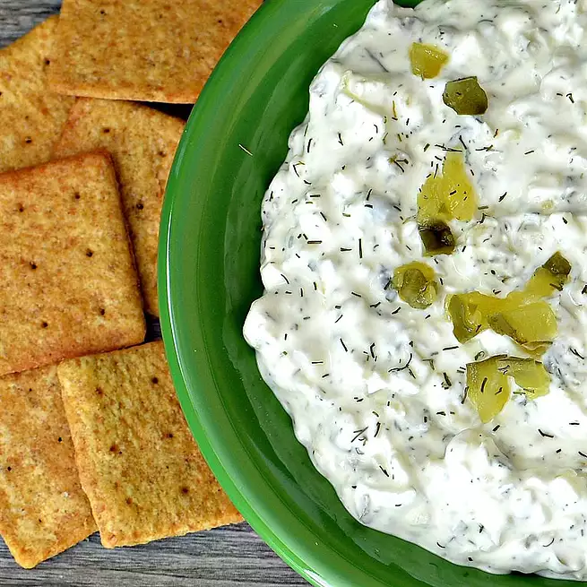

Dill Pickle Dip

Description
This was served at our Easter lunch and was devoured. Serve with
chips or crackers.
Ingredients
- 1 (8 ounce) package cream cheese, at room temperature
- 1 cup chopped dill pickles, or more to taste
- ¼ cup finely chopped sweet onion
- 2 tablespoons pickle juice, or more to taste
- 1 teaspoon dried dill weed
- ½ teaspoon kosher salt